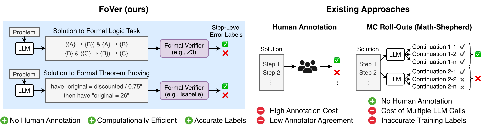
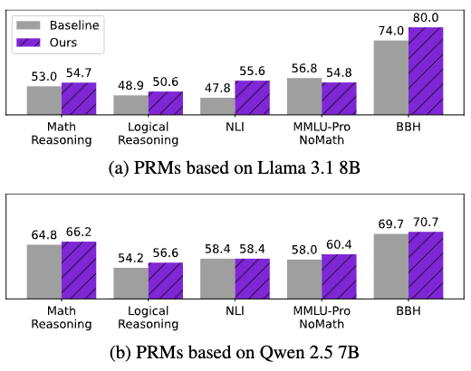
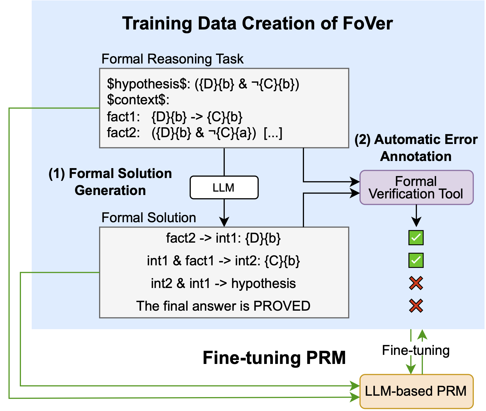

BibTeX

FoVer efficiently produces accurate PRM training data for formal reasoning tasks by leveraging formal verification tools. In contrast, existing methods are costly and produce noisy labels, as they rely on human annotation or repeated LLM calls.
Process Reward Models (PRMs) have emerged as a promising approach for improving LLM reasoning capabilities by providing process supervision over reasoning traces. However, existing approaches for constructing PRM training data remain costly and noisy, as they typically rely on human annotation or sampling-based labeling methods that require repeated LLM calls.
In this work, we propose FoVer, a framework that synthesizes PRM training data from formal reasoning tasks by annotating step-level error labels using formal verification tools such as Z3 and Isabelle. By leveraging formal verification, FoVer enables efficient and accurate PRM data construction without requiring human annotation or additional LLM calls. Using FoVer, we create PRM training data from formal logic and theorem proving tasks.
Experiments on 12~reasoning benchmarks show that fine-tuning on our training data improves PRMs not only on math and logic reasoning tasks, which are informal variants of the training tasks, but also on NLI and BBH benchmarks, which differ substantially from the tasks used to construct the training data. These results demonstrate the practical effectiveness of FoVer, showing that PRM training data created using formal verification improves PRMs on informal reasoning tasks written in natural language.

Best-of-7 results across 5~categories of 12~reasoning benchmarks. PRMs trained with FoVer outperform baseline PRMs on average, showing that our training data created from formal reasoning improves PRMs on widely used reasoning benchmarks.

Top: FoVer creates PRM training data from formal reasoning tasks using formal verification tools.
Bottom: Using the training data, we fine-tune PRMs on the task of step-level verification.